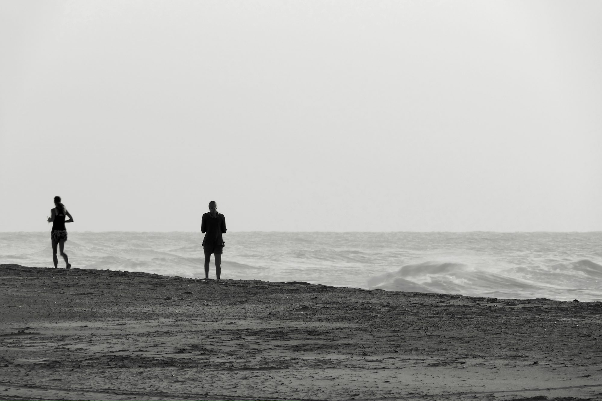

Fitness Beyond the Gym: Embracing an Active Lifestyle
This article explores how various forms of exercise, from traditional workouts to everyday activities, contribute to a healthier and more fulfilling lifestyle, emphasizing the importance of staying active.
The Essence of an Active Lifestyle
An active lifestyle is not just about hitting the gym for an hour every day; it's about incorporating movement into our daily lives. Physical activity can take many forms, from cardiovascular exercises that elevate our heart rate to flexibility training that enhances our range of motion. Each type of exercise offers unique benefits, and combining them can create a well-rounded fitness routine.
Cardiovascular Activities: The Heart of Fitness
Cardiovascular exercises are fundamental to improving heart health and overall endurance. Activities such as running, cycling, swimming, and dancing elevate your heart rate, promoting better circulation and lung capacity. For instance, running can be done almost anywhere—on a track, in a park, or on a treadmill. It not only boosts cardiovascular fitness but also serves as an excellent stress reliever. Finding a running partner or joining a local running group can add a social dimension to this solitary activity, making it more enjoyable and motivating.
Cycling is another great cardiovascular option that can be enjoyed indoors on a stationary bike or outdoors on scenic trails. It provides a low-impact workout, making it suitable for individuals of all fitness levels. Whether commuting by bike or exploring new routes on weekends, cycling can enhance leg strength and endurance while offering a sense of freedom and adventure.
Swimming is a full-body workout that’s easy on the joints, making it an ideal choice for many. The resistance of the water helps build muscle strength while improving cardiovascular fitness. Joining a local swimming club or taking water aerobics classes can add structure and camaraderie to your swimming routine.
Even activities like dancing provide a fun and energetic way to engage in cardiovascular exercise. From Zumba classes to casual dance parties at home, dancing can elevate your heart rate and improve coordination, all while allowing you to express yourself creatively.
Building Strength: The Importance of Resistance Training
While cardiovascular exercises are essential, incorporating strength training into your routine is equally important. Building muscle not only enhances physical strength but also increases metabolism and promotes overall health. Weightlifting, bodyweight exercises, and resistance band workouts can all contribute to a stronger physique.
Weightlifting allows for targeted muscle training, enabling individuals to focus on specific areas of the body. Starting with lighter weights and gradually increasing as your strength improves can lead to significant gains. Additionally, bodyweight exercises, such as push-ups, squats, and lunges, can be done anywhere, making them highly accessible. These exercises not only build strength but also improve flexibility and balance.
Resistance bands offer a versatile option for strength training, allowing for a wide range of movements and exercises. They provide constant tension, which can be particularly effective for muscle engagement. Incorporating resistance bands into your routine can add variety and challenge, keeping your workouts fresh and engaging.
Flexibility and Balance: The Unsung Heroes of Fitness
Flexibility is often overlooked, yet it plays a vital role in overall fitness. Regular stretching and flexibility exercises can enhance your range of motion, reduce the risk of injuries, and improve posture. Practices such as yoga and Pilates are excellent for promoting flexibility while also strengthening the core.
Yoga combines physical postures, breath control, and meditation, offering a holistic approach to fitness. Different styles of yoga cater to various skill levels, ensuring that everyone can find a practice that resonates with them. Regular yoga practice can lead to improved flexibility, balance, and mental clarity, making it a valuable addition to any fitness routine.
Pilates focuses on core strength, flexibility, and alignment through controlled movements. It emphasizes proper form and breath, promoting overall body awareness. This low-impact practice can be particularly beneficial for those recovering from injuries or looking to enhance their athletic performance.
In addition to yoga and Pilates, incorporating static stretching into your routine is essential. Taking a few minutes at the end of your workouts to hold stretches can significantly improve muscle flexibility and aid in recovery, helping to reduce soreness and stiffness.
High-Intensity Interval Training (HIIT): Efficient and Effective
High-Intensity Interval Training (HIIT) has become increasingly popular for its efficiency and effectiveness. This workout strategy alternates short bursts of intense exercise with brief rest periods, allowing you to achieve substantial fitness benefits in a shorter amount of time. HIIT can be applied to various forms of exercise, making it adaptable to different fitness levels and preferences.
Sprints are a classic example of HIIT, delivering rapid cardiovascular benefits while improving speed and endurance. Incorporating short, high-intensity bursts followed by recovery periods can boost your heart rate and maximize calorie burn. Circuit training, which involves rotating through a series of exercises with minimal rest, combines strength and cardio benefits, keeping your routine dynamic and engaging.
Engaging in Recreational Sports
Recreational sports offer a fun and social way to stay active while improving physical fitness. Participating in activities such as tennis, basketball, soccer, or even golf can promote cardiovascular health, coordination, and teamwork. These sports not only enhance fitness but also provide an opportunity to connect with others.
Tennis and basketball are fast-paced sports that elevate your heart rate and improve agility. Joining a local league or simply playing with friends can make these sports an enjoyable part of your routine. Soccer, with its emphasis on teamwork and strategy, not only improves cardiovascular fitness but also fosters camaraderie and social interaction.
Golf, while less intense, offers unique benefits such as improved flexibility and concentration. Walking the course provides moderate cardiovascular activity while allowing you to appreciate the outdoors and enjoy time with friends.
Mind-Body Practices: Connecting Movement and Mental Wellness
Mind-body exercises, such as Tai Chi and Qigong, emphasize the connection between movement and mental wellness. These practices promote relaxation, balance, and mindfulness, making them valuable additions to any fitness regimen. Tai Chi involves slow, deliberate movements combined with deep breathing, enhancing balance and flexibility while reducing stress. Qigong similarly integrates movement, breath, and meditation, offering health benefits through gentle exercises.
Both Tai Chi and Qigong are adaptable for individuals of all ages and fitness levels, making them accessible and beneficial. Incorporating these practices into your routine can lead to improved mental clarity and a greater sense of well-being.
The Core: Foundation of Strength
A strong core is fundamental for overall fitness and stability. Core strengthening exercises, such as planks and Russian twists, are essential for supporting nearly every movement you make. These exercises not only improve posture and stability but also contribute to better athletic performance and injury prevention.
Planks build isometric strength, while Russian twists enhance rotational stability. By incorporating these exercises into your routine, you can significantly improve functional fitness and support everyday activities.
Embracing the Outdoors
Outdoor activities offer a refreshing way to engage in exercise while enjoying nature. Hiking, rock climbing, and kayaking are excellent options that can elevate your fitness level while providing a sense of adventure. Hiking allows you to explore beautiful landscapes while improving cardiovascular health and lower body strength. It offers a great way to connect with nature and can be enjoyed solo or with friends.
Rock climbing, whether indoors or outdoors, challenges both your physical and mental capabilities, enhancing overall fitness. It promotes strength, endurance, and problem-solving skills, making it a rewarding and engaging activity. Kayaking provides a unique upper-body workout while allowing you to connect with serene water environments, offering a perfect blend of fitness and tranquility.
Conclusion
Embracing an active lifestyle is essential for maintaining physical health, enhancing mental well-being, and improving overall quality of life. By exploring various forms of exercise—from traditional workouts to everyday activities—you can create a fitness regimen that is enjoyable and sustainable. Whether you find joy in the thrill of cardiovascular activities, the strength gained from resistance training, or the tranquility of mind-body practices, there’s something for everyone. Remember, the key to a fulfilling fitness journey is to stay active, enjoy the process, and embrace the many benefits of movement along the way.